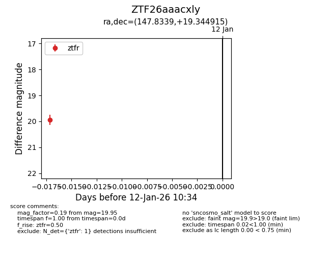
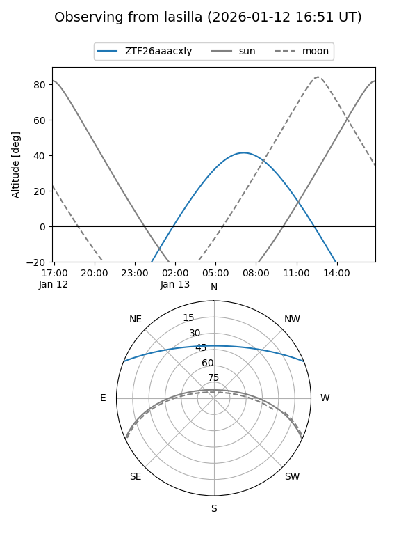
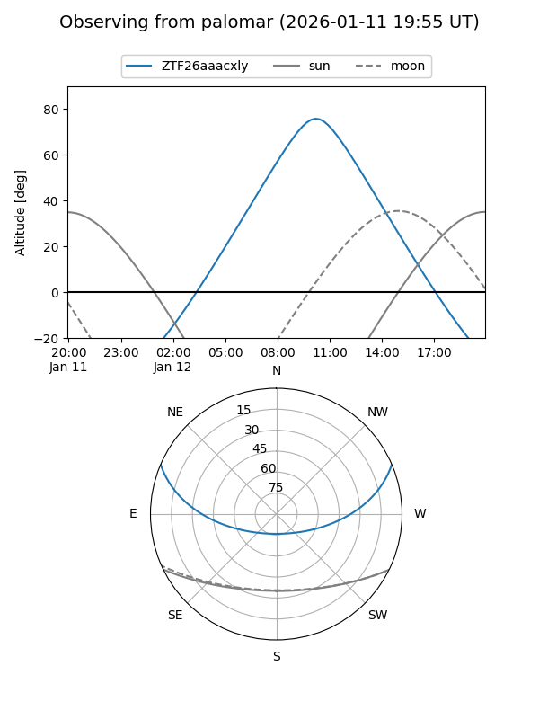

ZTF26aaacxly
Target ZTF26aaacxly at 2026-01-12 10:35
Aliases and brokers:
FINK: link
Lasair: link
ALeRCE: link
alt names
ZTF26aaacxly (ztf,fink_ztf)
Coordinates:
equatorial (ra, dec) = 147.8339,+19.34491
equatorial (HMS+DMS) = 09:51:20.12,+19:20:41.69
galactic (l, b) = (213.7282,+48.12194)
Flags:
Photometry:
last ztfr=19.95
1 ztfr detections
Lightcurve

Visibility


Additional plots